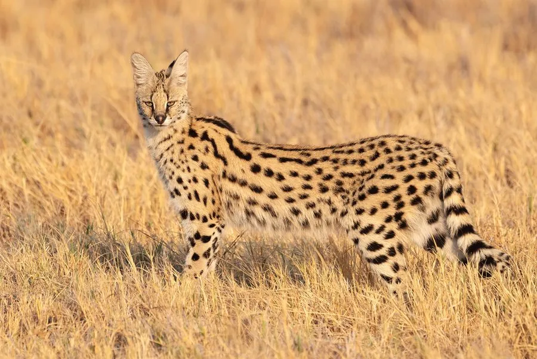

哺乳动物 · 动物界
薮猫 Leptailurus serval

非洲草原上的长腿猫类，耳大而直立、四肢修长，毛被橙黄缀黑斑，善于在草间腾跃扑击，是捕鼠效率极高的猎手。
- 分类
- 门脊索动物门纲哺乳纲目食肉目科猫科属薮猫属
- 栖息环境
- 热带稀树草原、高草丛、湿地边缘与农田附近
- 地理分布
- 非洲撒哈拉以南大部分地区，以南非、东非草原最为常见
- 保护级别
- IUCN 无危（LC）；CITES 附录Ⅱ
物种志
薮猫体态修长，肩高约 55–60 厘米，体长 60–90 厘米，尾长约 30 厘米，成年体重 7–13 千克，四肢在猫科中比例特别长，因此能在高草中轻松窥视猎物。毛被底色橙黄至沙黄，通体散布黑色斑点，斑点沿颈背与背脊连成纵纹，耳大而圆、耳背黑色带白斑，尾端黑色，耳与眼之间有明显白色眉斑。
它们栖息于非洲撒哈拉以南的稀树草原、湿地边缘和高草丛，多单独活动，晨昏与夜间捕猎，主要依靠听觉定位，能垂直跃起两三米扑击藏在草丛中的鼠类与鸟类，也捕食蛙、蜥蜴与昆虫。猎食时先静静伏低、缓慢接近，再猛地腾空下压。每年繁殖一次，孕期约 74 天，每胎 1–5 仔。因毛皮贸易与湿地开垦，部分区域数量下降，但整体仍较常见。
形态与习性
- 体长约 60–90 cm，尾长 20–40 cm
- 体重约 7–13 kg，雄性略大
- 肩高约 55–60 cm，四肢在猫科中比例突出
- 食性鼠类、鸟类、蛙、蜥蜴与昆虫
- 繁殖孕期约 74 天，每胎 1–5 仔
- 跳跃能力可垂直跃起 2–3 m 扑击草丛中的猎物
- 寿命野外约 10 年，饲养下可达 20 年
趣味知识
- 薮猫的耳朵在猫科中相对最大，能精确定位草丛里鼠类的窸窣声。
- 它捕猎时会先高高跃起，再用前爪把猎物压向地面，动作像跳芭蕾。
- 家猫中的“热带草原猫”就是薮猫与家猫杂交培育出的品种。